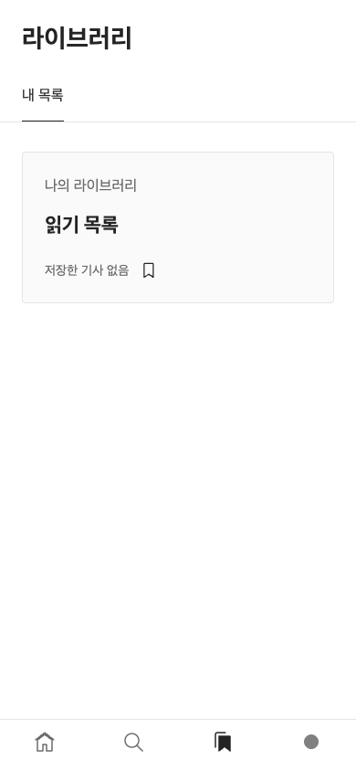
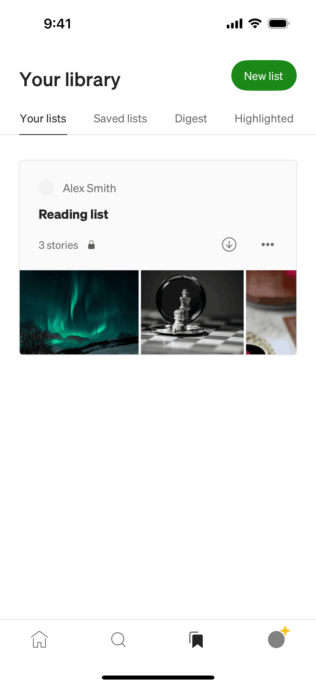
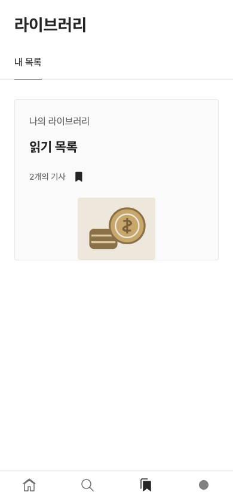
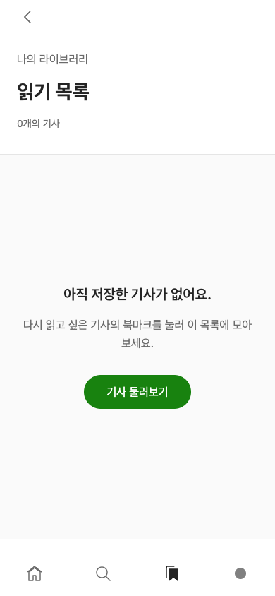
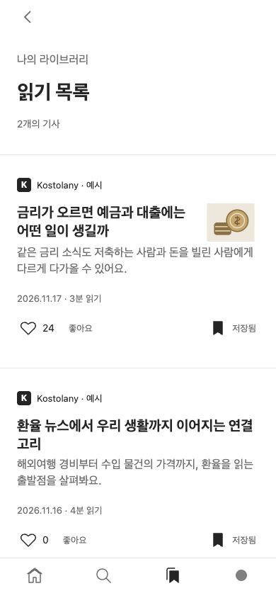
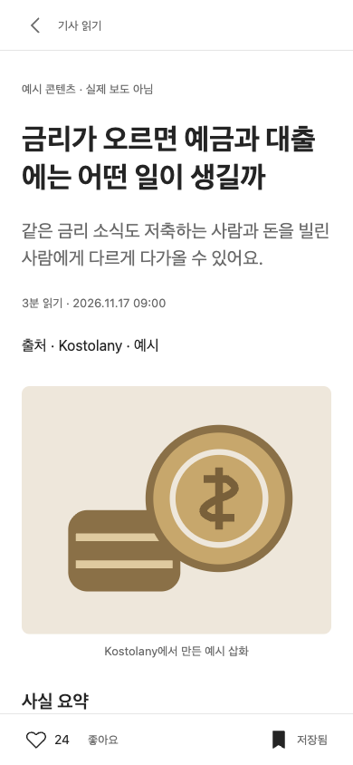
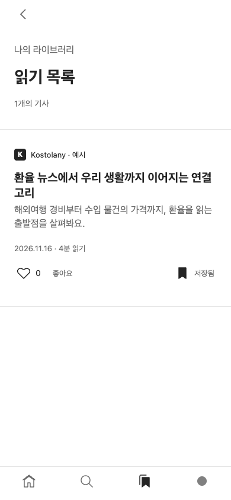

라이브러리 · 빈 읽기 목록
목록 생성 배너·다른 탭·다운로드·공개 설정은 이번 범위에서 제외했다. 빈 썸네일 틀을 만들지 않는다.



2026-11-18 검토. Medium iOS 카탈로그 Latest(1419)의 보관 PNG 1179×2556px을 가로 390px로 비율 유지 축소했다. 파일 변경·자르기·위치 보정은 하지 않았다. 구현은 Chrome 157.0.8103.79의 390×844 CSS px 캡처이며 실제 네이티브 실행이 아니다. 원본의 기기·OS·DPR·제품 빌드는 미확인이다.
원본의 iOS 상태 표시줄·홈 인디케이터와 브라우저의 inset 차이, 한글과 자체 콘텐츠의 길이 차이를 유지해 대조한다. 픽셀 일치 점수를 사용하지 않는다.
목록 생성 배너·다른 탭·다운로드·공개 설정은 이번 범위에서 제외했다. 빈 썸네일 틀을 만들지 않는다.

목록 카드의 소유자·제목·기사 수·삽화 미리보기를 대조한다. 이미지 없는 기사는 미리보기를 만들지 않는다.


제목·설명·초록색 둘러보기 버튼·하단 탭을 대조한다. 실제 계정 프로필·공유·댓글·다운로드는 포함하지 않는다.


출처·제목·썸네일·구분선·저장 상태를 대조한다. 한글 요약과 단일 좋아요는 자체 요소이며 메모·더보기 메뉴는 제외했다.


본문 바깥 하단 바의 채운 북마크와 반응을 대조한다. 기본 읽기 목록에 즉시 저장하며 다중 목록 선택 시트는 Goal 9 범위로 남긴다.


기사 자체를 삭제하지 않고 목록에서 제거한다. 원본의 더보기·Undo 대신 북마크 직접 해제를 사용한다. 실패 시 확정 상태 복구와 동일 목표 재시도를 제공한다.

